Zerei em 07/06/2026 e fiz uma nuzzlocke nesse jogo, esse não foi o primeiro jogo de pokemon que eu joguei, no qual foi o Pokemon Black, mas eu joguei ele porque um amigo meu deu a ideia da gente fazer uma nuzzlocke de todos os pokemons mais recentes de cada geração, então a gente planejou jogar nessa ordem: Leaf Green/Fire Red, Heart Gold/Soul Silver, e etc. Além disso, quando irmos pro próximo jogo, nós vamos poder usar todos os pokemon que temos disponivel para lidar com a elite 4, por exemplo eu posso transferir os pokemons que eu tenho do Leaf Green para o Heart Gold e assim por diante.
Bom, para começar meu inicial foi o Squirtle, chamado Star Eater um nome bem fofinho, porque eu gosto da tartaruga grande com canhões nas costas. Eu não vou falar de todas as minhas capturas porque fodase, e sim das minhas entratégias contra os líderes de ginásio. Na primeira rota, já dei sorte por que encontrei um Rattata, chamado Ratomanocu, que tinha GUTS que é uma habilidade que quando você fica com algum stats, como burn, poison e etc seu ataque é duplicado, e ele aprende Facade, que é outro golpe que duplica nestas mesmas condições, no entanto nesse jogo não existe flame orb (item que te faz queimar), que é a melhor forma de utilizar o guts.
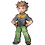
Vamos começar com nosso querido Brock, que não tem muito segredo. Como meu inicial foi o Squirtle, eu só derrotei ele com vários Water Gun garantindo minha primeira insígnia.
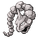
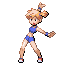
Misty tem o seu perigoso Starmie que é um pokemon bulk, com muito ataque e rápida que tem acesso a recover, um golpe que recupera metade de sua vida. Minha estratégia era bem simples eu tinha uma Weepinbell, apelidada de CostaSilva e usei Sleep Powder para por o cara pra dormir e depois coloquei o Star Eater que ficou dando Bites, pois a Starmie é psíquico, que nessa geração era um ataque Special. Assim levando a insígnia para casa.
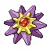
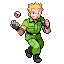
Bom contra o Surge existe nenhum segredo e eu tinha um Geodude apelidado de Bro, que causou vários terremetos de magnetude diferente, e esse ginásio tem possivelmente o pior puzzle da história, que é ficar olhando as merdas das latas de lixo.
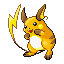
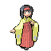
Erika Erika, o ginásio que mostra que você não pode escolher o caminho fácil se não irá enfrentar mais treinadores. Enfim, todos os pokemons dela são solados pelo Pidgeotto, apelidado de Abacaxi, pois então ele matou todos os pokemons, mas sobrou a Vileplume que conseguiu colocar ele para dormir, então eu coloquei meu CostaSilva (Weepinbell) e botei ela para dormir, se fudeu, e então finalizei este ginásio.
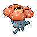
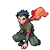
Koga, o Ninja filho da puta, enquanto a gente ta tentando passar pelo labirinto ele fica lá sentando observando a gente dar de cara no vidro, vai se fuder Koga. Bom, o time dele é bem engraçado, tendo 2 Koffing com Self-Destruction e eu não quero tomar esse golpe, no entanto todos os pokemons dele tem uma baixa Special Defense, então eu peguei meu Venomoth, chamado Natan, que aprende psybeam dando super efetivo em todos os pokemons do Koga, garantindo minha vitória.
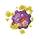
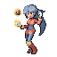
Sabrina é a namorada de Lukovisk. Sabrina é uma líder interressante, tendo seu pokemon mais forte o Alakazam e outra coisa bem perigosa é seu Mister Mine com Calm Mind, um golpe que aumenta em 1 Stage seu Special Ataque e Special Defesa, além disso possui o golpe Baton Pass, que passa todas as suas alterações de status para outro pokemon que vai ser colocado em campo, e eu não quero um Alakazam de Recover com grandes stats. Enfim, eu preciso de um pokemon que bata físico e seja mais rápido que um Alakazam, eu não tenho isso, mas tenho uma Beedrill, chamada Barry, e ela foi o suficiente para acabar com o time dela, tendo que ter uma pequena ajuda do Blastoise e sua mordida.
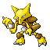
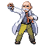
Você sabia que Blaine é uma junção de Blaze com Flame? Neste ginásio tem um "puzzle" bem único, onde você pode responder perguntas sobre pokemon e se você acertar você não precisa lutar com todos os treinadores. Outro ginásia bem fácil, pois o Star Eater acabou com tudo e todos.
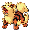
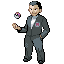
GIOVANNI FILHO DA PUTA PARA DE MATAR POKEMONS, uma coisa que é do caralho é o líder da Equipe Rocktet ser o último líder de ginásio que você irá enfrentar, mas infelizmente este ginásio não foi nada demais, pois novamente o Star Eater comeu todos.
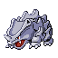